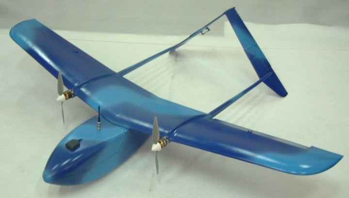
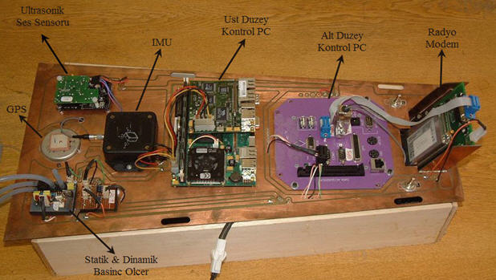
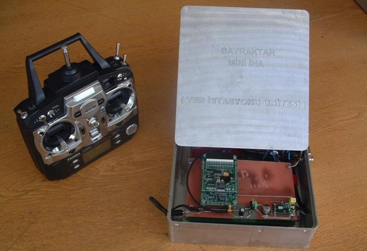

|
Ýnsansýz hava araçlarý hangi alanlarda kullanýlmaktadýrlar?
Bugün özellikler askeri operasyonlarda yoðun olarak kullanýlmaktadýrlar. Keþif, Gözetleme, Hedef tespit ve takibi, elektronik atak, elektronik sinyal istihbaratý vb. operasyonlarda kullanýlmalarýnýn yanýnda taþýdýklarý güdümlü füzelerle saldýrý maksatlý olarak da kullanýlmaktadýrlar. Yine sahil gözetleme, sýnýr keþif ve kontrol, trafik denetimi, orman yangýnlarý, arama/tarama, boru hatlarý gözetimi, balýkçýlýk vb. ticari alanlarda da kullanýmlarý yaygýnlaþmaktadýr.

Ýnsansýz Hava Aracý projeniz nasýl baþladý?
Aslýnda bu projenin arka planýnda havacýlýða olan ilgi ve merak yatýyor. Babam (Özdemir Bayraktar) amatör uçak pilotu, bizde ilk uçuþ tecrübemizi onun eðitim gördüðü T-41 uçaðý ile yaþamýþtýk. Model uçak ve helikopterle ilgili olarak çocukluktan beri süregelen hobi faaliyetlerimiz vardý.
Kardeþim Selçuk Bayraktar ÝTÜ Elektronik'ten mezun olduktan sonra University of Pennsylvania'da mastýr eðitiminde insansýz uçak projesini yürüttü. Kendisi üst düzey kontrol sistemleri ile ilgili olarak baþarýlý araþtýrmalar gerçekleþtirdi. Örneðin Amerika'nýn meþhur piyade üstlerinden olan Fort Bening Battle Space'de taktik insansýz hava araçlarý ile ilk otonom formasyon uçuþ deneyi, mozaik haritalama, hava ve yer koordinasyon deneylerini gerçekleþtirdi. Ýnsansýz hava araçlarý teknik ve kullaným alaný açýsýndan bakýldýðýnda havacýlýk teknolojisindeki en son geliþmelerin yaþandýðý, að merkezli harp gibi yeni geliþen savaþ stratejilerinin de en önemli bileþenlerinden olduðu görülmektedir. Türkiye'de ÝHA sistemlerinin geliþtirilmesine yönelik özgün ve milli çözüm geliþtirme noktasýnda ülkemizi bulunduðu noktadan çok daha ileri bir seviyeye getirme amaç ve düþüncesi ile somut olarak proje çalýþmalarýmýz baþladý.
Aslýnda kapsam olarak baktýðýnýzda bizim gibi orta ölçekli bir firmanýn tek baþýna altýndan kalkamayacaðý bir konu gibi gözükebilir, ama bugüne kadar ülkemizde bu konuda bu kapsamda bir çalýþma yapýlmamýþ olmasý, kýsýtlý imkanlarla da olsa ideallerimizle çalýþmalara baþladýk, ve bu tür iþlerin rahatlýkla yapýlabileceði konusunda iyi bir örnek sergilediðimizi düþünüyoruz.
Projenin ülkemiz açýsýndan önemi nedir?
Ýnsansýz hava araçlarý konusu özellikle 90'lý yýllardan sonra bilgisayar iþlemci gücü ve elektronik sensor vb. komponentlerin geliþtirilmesi konusundaki yaþanan geliþmeler, bu araçlarýn geliþtirilmesine yönelik özellikle ABD ve Ýsrail'de önemli atýlýmlarýn yapýlmasýna sebep olmuþtur. Havacýlýk alanýnda en son teknolojik imkanlarýn kullanýlmasý, aðýr sanayi yatýrýmý ihtiyacý olmamasý vb. hususlar açýsýndan aslýnda ülkemiz için çok önemli avantaj ve fýrsatlar sunduðunu düþünmekteyiz. Bugün insanlý jet uçaklarýnýn üretilmesi için yapýlmasý gereken aðýr sanayi yatýrýmý yerine, beyin sermayesi, tasarým odaklý ve üretim yatýrýmý açýsýndan altýndan rahatlýkla kalkabileceðimiz bu sistemlerin üretiminin çok önemli bir avantaj olduðunu deðerlendirmekteyiz. Bu tür yüksek teknoloji içeren ürünlerin milli ve özgün olarak geliþtirilmesi herkesin þikayetçi olduðu beyin göçünün engellenmesi, üniversite sanayi iþbirliðinin artmasý, bu tür sistemlerin alýmý için harcanan yüklü miktarlarýn yurtiçine dönmesi vb. bir çok fayda saðlayacaktýr.
Proje kapsamýnda neleri geliþtirdiniz?
Çalýþmalarýmýz insansýz hava araçlarýnýn en stratejik bileþenleri olan elektronik donaným ve yazýlýmlarýnýn geliþtirilmesi konusu ile baþladý. Örneðin bugün yurtdýþýndan ÝHA sistemlerinde kullanmak üzere bir otopilot sistemi almak isteseniz, füze rejimi kurallarýna tabi olduðu için birçok engel ile karþýlaþýlýr. Özellikle askeri açýdan akýllý silah kapsamýna giren bu tür ürünlerde yabancý kaynaklardan alým sistemlerin güvenilirliði açýsýndan tehlikeler arz etmektedir... bunun örnekleri çoktur. bu sebepten öncelikli olarak otopilot sistemi, haberleþme sistemi, yer istasyonu sistemi, komuta kontrol ve izleme için kullanýcý arayüz gibi temel bileþenlerin geliþtirilmesine odaklanarak çalýþmalarýmýzý sürdürdük ve bugüne kadar mini ve taktik sýnýfýna yönelik her türlü sabit kanat (uçak) insansýz hava aracýný kendi kendine uçurur hale getirecek sistemleri %100 özgün ve milli olarak geliþtirmiþ bulunmaktayýz.


Dünya'daki benzerleri ve rakipleriyle karþýlaþtýrmalý olarak açýklayýn lütfen.
Þu an için geliþtirdiðimiz sistemlerin dünyadaki benzerleri ile karþýlaþtýrýldýðýnda birçok yönden fazlasý bulunduðunu görmekteyiz. En son teknolojik yazýlým ve donaným araçlarý kullanarak bu sistemleri geliþtirdik. Bugün örneðin dünyada çoklu insansýz hava araçlarýna yönelik bir kullaným yok, biz kendi geliþtirdiðimiz konseptler çerçevesinde tek bir yer istasyonundan havada uçan birden çok insansýz hava aracýnýn izlenebilmesi, gerektiðinde görev verilebilmesini saðlayacak bir sistem mimarisi ortaya koyduk ve þu an yapýlan tüm çalýþmalar bu kapsamda ilerliyor.
Ýlk Otonom uçuþu ne zaman gerçekleþtirdiniz?
Ekip olarak gecesiyle gündüzüyle çok yoðun bir tempoda çalýþarak geliþtirdiðimiz bizim ilk nesil olarak adlandýrdýðýmýz sistemlerle 1 Eylül 2004 tarihinde ilk otonom uçuþ tecrübemizi yaþadýk. Cessna tipi model uçak aracýna bu sistemleri yerleþtirdik ve 20þer dakikalýk uçuþ testleri yaptýk. Uzun zaman verilen emekler sonrasýnda havada uçaðý kendi kendine uçar halde görmek, özellikle bulutlarýn arasýna karýþýp da görünmez duruma düþmesi sonrasýnda geri geliþini izleme bizim için çok büyük bir heyecandý. Ýlk uçuþlarýmýzda elde ettiðimiz baþarýlý sonuçlar sonrasýndaki süreç içerisinde de önemli motivasyon saðladý.
Projenize ilgi ve destek var mý?
Özellikler askeri yetkililer tarafýndan manevi açýdan çok desteklendik, buda bizde önemli bir motivasyon oluþturdu. Bu tür iþlerde de en önemli etken bu. Ama henüz maddi olarak bir destek almadýk. Tamamen kendi bünyemizden finanse ederek sürdürüyoruz çalýþmalarý.
|